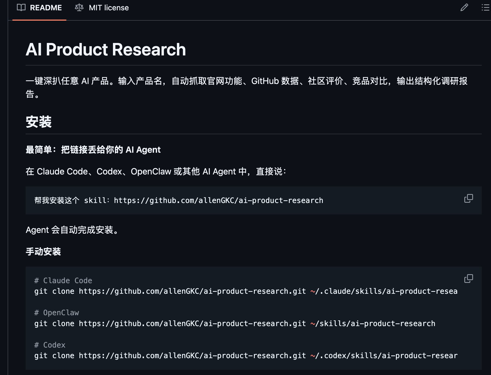
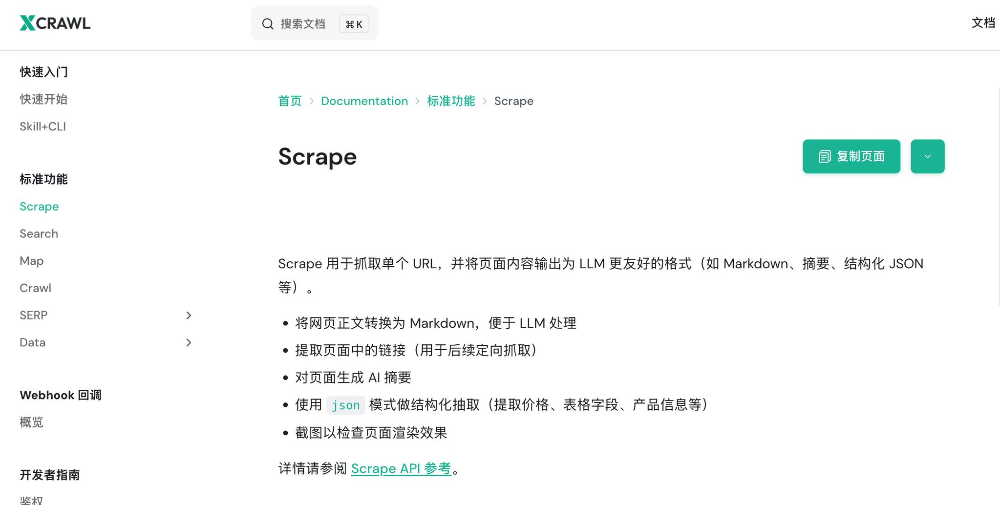
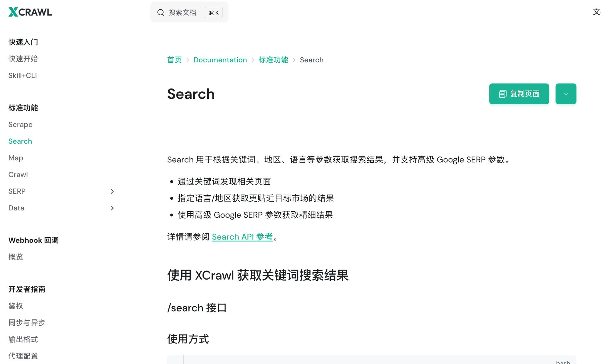
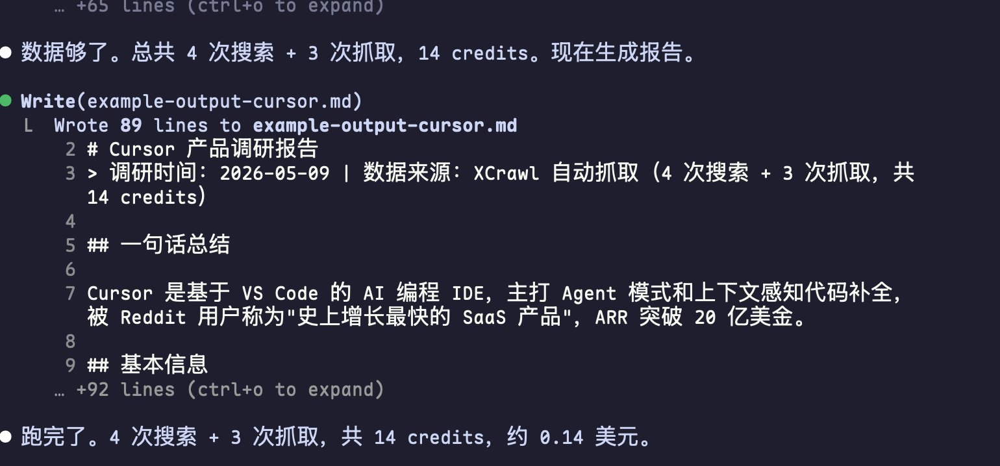
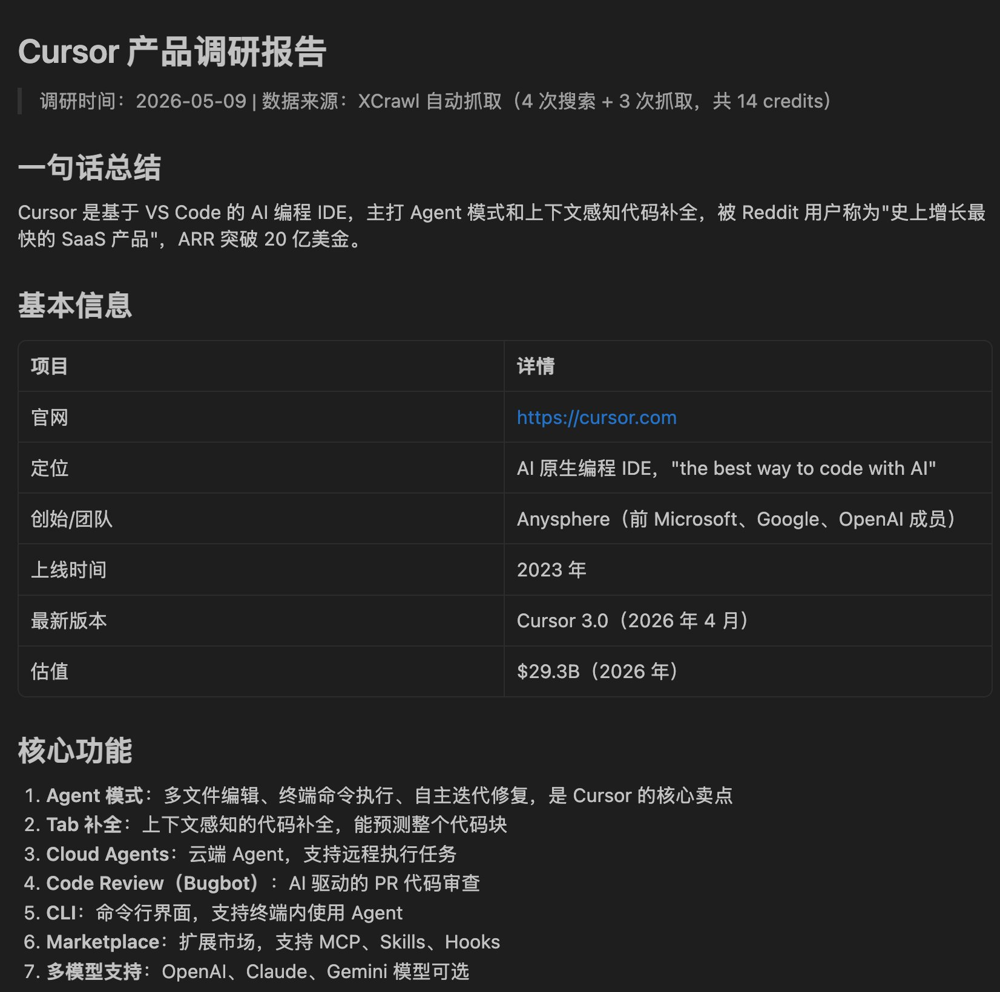
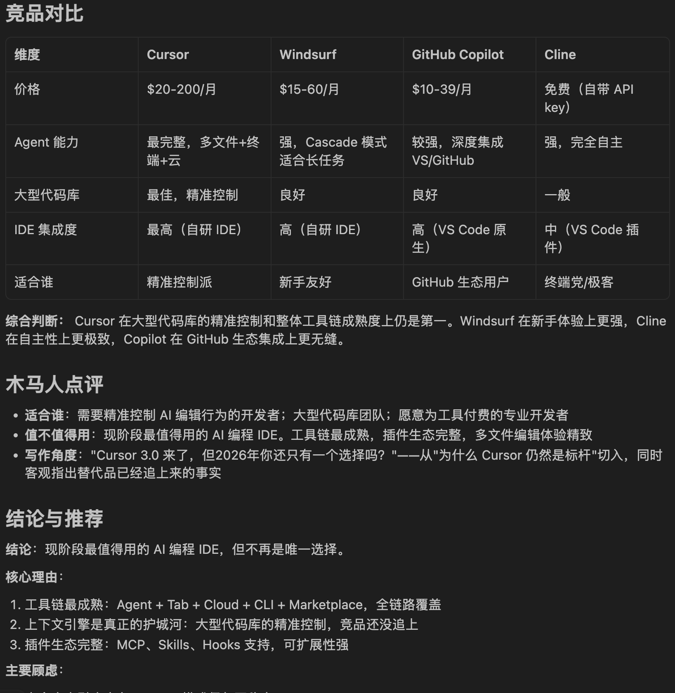
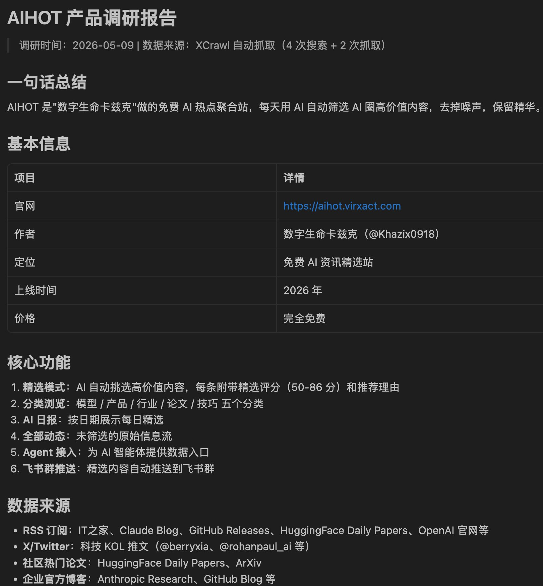

>
>
前两天，老板想做一个xx产品的竞品调研，然后我们的运营搞了一天，结果最后被老板痛骂，说这个竞品报告写的太烂，一眼AI~
然后他跟我吐槽这事，我说你是不是没有用AI辅助，他说用了，但是结果不太行~
我说你咋用的，他说就用豆包啊，然后跟它说："帮我生成一份XX产品的竞品分析报告"
然后AI一本正经地给他生成了一份500多字竞品分析报告。
但结果就是，里面定价不对，功能不完备，竞品对比也是瞎扯淡。
稍微看下对应产品的官方，就发现数据对不上，不被老板骂就有鬼了。
于是我花10分钟，帮他做了一个产品调研skill。
只要说一句："深扒xxx产品"，他就可以自动输出完整调研报告。
我把这个skill开源在Github上，地址放在最后了，有兴趣可以看看。

这个 Skill 能干嘛
我做的这个Skill，叫 ai-product-research。
功能很简单：输入一个产品名，自动输出完整调研报告。
举个例子：
深扒一下 Cursor
Agent 会自动做 5 件事：
- 搜产品官网，抓取功能和定价
- 搜 GitHub 仓库，看技术指标
- 搜社区评价（Reddit、X、知乎上的讨论）
- 搜竞品对比
- 汇总输出结构化报告，附带结论和推荐
全程 2 分钟，我说了一句话。

怎么做到的
Agent 不能上网，但可以调 API。
我试了好几个方案，最后选了 XCrawl。原因很简单：
它有两个核心能力刚好对上：
- Search API：输入关键词，返回结构化搜索结果。我用它搜"Cursor official site""Cursor github""Cursor review"，一步拿到相关链接
- Scrape API：输入 URL，直接返回 Markdown 格式的页面内容。不管页面是 JS 渲染的还是动态加载的，它都能抓
两个 API 配合，就是"先搜再抓"——和人手动调研的逻辑一模一样，但全自动化。

为什么不用别的方案？
- 自己写爬虫？JS 渲染、反爬、代理轮换，每个都是坑，我踩了一下午
- 用浏览器插件？没法给 Agent 用，只能人手动操作
- XCrawl 内置了住宅代理和浏览器指纹伪装，成功率高，不用自己操心这些
- 关键是：返回的格式 Agent 直接就能用，不用二次处理。这对做自动化流程来说太重要了。
我把这两个 API 封装成了一个 Skill，Agent 遇到调研任务时自动调用，就这么解决了。
跑了一遍 Cursor
说再多不如实测一把。我直接拿 Cursor 来测试，这个产品够复杂了。
深扒一下 Cursor
4 次搜索 + 3 次抓取，总共 14 credits，约 0.14 美元。不到两毛钱。
2 分钟后，报告出来了。挑几个有意思的点：
定价策略
Cursor 有 4 个版本：免费版（有限 Agent 请求）、Pro（$20/月）、Pro+（$60/月）、Ultra（$200/月）。值得注意的是，Pro 版已经支持 MCP、Skills 和 Hooks，这意味着你可以给 Cursor 装扩展。

社区评价
知乎上有人做了 2026 年 AI 编程 IDE 横评，结论是 Cursor 仍然是"有大脑的 VS Code"领域的标杆，上下文引擎是真正的护城河。但也有人说大仓库索引吃内存，Agent 模式偶尔会抽风。
Reddit 上的评价更直接："历史上增长最快的 SaaS 产品，ARR 突破 20 亿美金。"

竞品对比
和 Windsurf 比，Cursor 在大型代码库的精准控制上更强；和 GitHub Copilot 比，Cursor 的 Agent 能力更完整；和 Cline 比，Cursor 的 IDE 集成度更高。

结论
现阶段最值得用的 AI 编程 IDE。工具链最成熟、插件生态完整、多文件编辑体验精致。顾虑是大仓库吃内存、Agent 模式稳定性有待提升。
建议：先用免费版试试，觉得 Agent 好用再升级 Pro。
这些信息全是自动抓的，我一个字都没手动输。

顺便扒了一下 AIHOT
前几天刷到卡兹克分享了一个站：AIHOT，AI 热点聚合站。我也用这个 Skill 跑了一遍：
深扒一下 aihot.virxact.com
结果发现：这是卡兹克免费做的，信源包括 IT之家、HuggingFace、GitHub、X 上的科技 KOL 推文。每条内容有 AI 精选评分（50-86 分），还支持 Agent 接入和飞书群推送。
结论：值得每天看。免费 + 中文 + AI 精选评分，这个组合市面上不多。
连卡兹克是这个站的作者都扒出来了~

开源了
目前这个 Skill 开源了，叫 ai-product-research。支持 Claude Code、Codex、OpenClaw 等主流 AI Agent。
在 Claude Code 里说一句就能装：
我的安装这个 skill：https://github.com/allenGKC/ai-product-research
另外这个 Skill 需要 XCrawl 的 API Key，目前新人注册送 1,000 免费 credits：
- 注册地址：https://xcrawl.com/?keyword=henitdw4
- Skill 开源地址：https://github.com/allenGKC/ai-product-research
花 2 分钟深扒一个产品，然后决定要不要用它。这比花 2 小时手动调研，效率高多了~
感谢看到这里，如果对你有帮助，欢迎关注我的 X 账号 @cnyzgkc，我会持续分享 AI 领域相关的内容思考、AI 工具使用体验等内容。
也欢迎关注我的公众号：木马人AI
>
>
>
>
先日、上司がXX製品の競合調査をやりたいと言い出し、うちの運営担当が丸一日かけてやった結果、最終的に上司に「この競合レポートは酷すぎる、一目でAI生成だとわかる」と怒鳴られてしまいました。
彼がそのことを愚痴ってきたので、「AI使わなかったの？」と聞くと、「使ったけど、結果がイマイチだった」と。
使い方を聞くと、「豆包（Doubao）に『XX製品の競合分析レポートを生成して』とだけ頼んだ」とのこと。
するとAIは真面目に500字ほどの競合分析レポートを生成したそうです。
しかし結果は、価格設定が間違っている、機能が不完全、競合比較もデタラメ。
対応する製品の公式サイトを少し確認すればデータが合っていないのは明らかで、上司に怒られるのも当然でした。
そこで私は10分かけて、彼のためにプロダクトリサーチSkillを作りました。
「XXX製品を深掘りして」と言うだけで、自動的に完全な調査レポートを出力してくれます。
このSkillはGitHubで公開しています。アドレスは最後に載せてありますので、興味があればご覧ください。
この Skill でできること
私が作ったこのSkillの名前は ai-product-research です。
機能はとてもシンプル：製品名を入力するだけで、自動的に完全な調査レポートを出力します。
例を挙げましょう：
Cursor を深掘りする
Agent は自動で次の5つのことを行います：
- 製品公式サイトを検索し、機能と価格を取得
- GitHub リポジトリを検索し、技術指標を確認
- コミュニティ評価を検索（Reddit、X、知乎での議論）
- 競合比較を検索
- 構造化レポートにまとめ、結論と推奨事項を付けて出力
全行程たった2分。私が一言言っただけです。
どのように実現したか
Agent は直接インターネットにアクセスできませんが、API を呼び出すことはできます。
いくつかの方法を試した結果、最終的に XCrawl を選びました。理由は単純です：
XCrawl には2つの中核機能がぴったり合致していました：
- Search API：キーワードを入力すると、構造化された検索結果を返します。"Cursor official site""Cursor github""Cursor review"と検索して、関連リンクを一発で取得
- Scrape API：URL を入力すると、Markdown 形式のページ内容を直接返します。JS レンダリングや動的読み込みのページでも取得可能
この2つのAPIを組み合わせることで、「まず検索してから取得する」——人間が手動で調査するロジックと全く同じですが、完全に自動化されています。
なぜ他の方法を選ばなかったのか？
- 自分でクローラーを書く？JS レンダリング、アンチスクレイピング、プロキシローテーション——どれも落とし穴だらけで、半日ハマりました
- ブラウザ拡張機能を使う？Agent には使えず、人間が手動操作する必要がある
- XCrawl は住宅用プロキシとブラウザフィンガープリント偽装を内蔵しており、成功率が高く、自分で気を遣う必要がない
- 重要なのは：返される形式が Agent にそのまま使えるので、二次処理が不要。自動化フローにとってこれは非常に重要
これら2つのAPIをSkillとしてカプセル化し、Agentが調査タスクに遭遇したときに自動的に呼び出すようにして、この問題を解決しました。
Cursor で実際に試してみた
言葉で説明するより実際に試すのが一番です。Cursor を使ってテストしました。この製品は十分に複雑です。
Cursor を深掘りする
4回の検索 + 3回のスクレイピング、合計14クレジット、約0.14ドル。20円にも満たないコストです。
2分後、レポートが完成しました。いくつか面白いポイントをご紹介します：
価格戦略
Cursor には4つのバージョンがあります：無料版（Agentリクエスト制限あり）、Pro（$20/月）、Pro+（$60/月）、Ultra（$200/月）。特筆すべきは、Pro版ですでに MCP、Skills、Hooks をサポートしていることで、Cursor に拡張機能を追加できるということです。
コミュニティ評価
知乎（Zhihu）で2026年のAIプログラミングIDE比較レビューがあり、Cursor は依然として「脳を持つVS Code」分野のベンチマークであり、コンテキストエンジンが真の堀（モート）であるという結論でした。しかし、大規模リポジトリのインデックス作成でメモリを消費する、Agentモードが時々不安定になるという声もありました。
Reddit での評価はさらに直接的：「歴史上最も急速に成長したSaaS製品、ARRは20億ドルを突破。」
競合比較
Windsurf と比較すると、Cursor は大規模コードベースでの精度の高い制御に優れています。GitHub Copilot と比較すると、Cursor のAgent機能はより完全です。Cline と比較すると、Cursor のIDE統合度はより高いです。
結論
現時点で最も価値のある AI プログラミング IDE。ツールチェーンが最も成熟しており、プラグインエコシステムが完全で、マルチファイル編集体験が洗練されています。懸念点は、大規模リポジトリでのメモリ消費、Agentモードの安定性の向上が必要なこと。
推奨：まずは無料版を試して、Agentが便利だと感じたらProにアップグレードすることをお勧めします。
これらの情報はすべて自動取得したもので、私は一言も手動で入力していません。
ついでに AIHOT も深掘り
先日、カズケ（卡兹克）がシェアしていたサイトを偶然見つけました：AIHOT、AIホットトピック集約サイトです。これもこのSkillで試してみました：
aihot.virxact.com を深掘りする
結果：これはカズケが無料で作ったもので、情報源には IT之家、HuggingFace、GitHub、X のテクノロジーKOLのツイートが含まれています。各コンテンツにはAI厳選スコア（50-86点）が付けられており、Agent連携や飛書（Feishu）グループへのプッシュもサポートしています。
結論：毎日見る価値あり。無料 + 中文 + AI厳選スコア、この組み合わせは市場にあまりありません。
カズケがこのサイトの作者であることまで深掘りできました〜
オープンソース化
現在、このSkillは ai-product-research としてオープンソース化されています。Claude Code、Codex、OpenClaw など主要なAI Agentに対応しています。
Claude Code で一言言うだけでインストールできます：
このskillをインストールして：https://github.com/allenGKC/ai-product-research
また、このSkillを使用するには XCrawl の API Key が必要です。現在、新規登録者には1,000クレジットが無料で付与されます：
- 登録URL：https://xcrawl.com/?keyword=henitdw4
- Skill 公開URL：https://github.com/allenGKC/ai-product-research
たった2分で製品を深掘りし、それを使うかどうかを判断する。これは2時間かけて手動で調査するよりはるかに効率的です〜
最後までお読みいただきありがとうございます。参考になりましたら、私のXアカウント @cnyzgkc をフォローしてください。AI分野に関する考察やAIツールの使用体験などを継続的にシェアしていきます。
また、WeChat公式アカウント 木馬人AI もフォローよろしくお願いします。
>
>